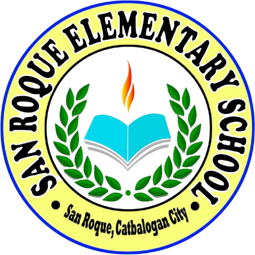

Catbalogan City Division • School ID: 123437
In the Department of Education (DepEd) Schools Division Office, the School Governance and Operations Division (SGOD) is often described as the "engine room" of the division.
Quality assurance, monitoring school performance, and assessing School-Based Management (SBM) levels.
Data management (LIS/BEIS), division-wide statistics, and educational action research.
Learning and development (L&D), seminars, training programs, and professional growth for school personnel.
Community partnerships, external stakeholders, Brigada Eskwela, and the Adopt-a-School Program.
Learner and staff wellness, medical/dental services, and the School-Based Feeding Program (SBFP).
Infrastructure, school building construction, structural repairs, and site titling (managed by the Division Engineer).
Emergency response, safety protocols, typhoon/earthquake readiness, and resilience training.
Student leadership, co-curricular activities, and organizations like the SELG and SSLG.